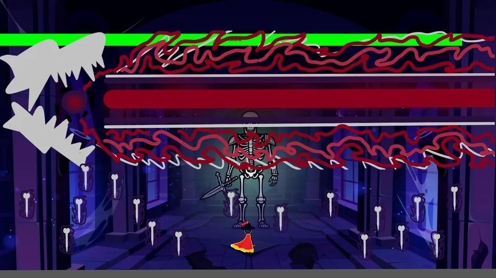

INTRODUCTION
나를 소개합니다
Unity를 활용해 퀴즈와 퍼즐을 결합한 스토리형 게임과 영어 단어 퀴즈를 더한 검 키우기 게임을 제작했습니다.
개인 프로젝트 1
오코타?
Unity를 활용해 퀴즈와 퍼즐을 결합한 스토리형 게임을 제작했습니다. 일반 상식 문제를 어렵게 구성하고, 스토리 중간에 퀴즈를 배치해 도전과 재미를 동시에 느낄 수 있도록 했습니다.
프로젝트에서 배운 점
개발 과정에서 사전 기획과 체계적인 설계가 프로젝트 진행에 중요하다는 점을 배웠습니다.
개인 프로젝트 2
공주를 구해줘!
검 키우기 게임 방식에 영어 단어 퀴즈를 결합한 학습형 게임을 제작했습니다. 익숙한 게임 방식을 활용해 플레이어가 게임을 즐기면서 자연스럽게 영어 단어를 익힐 수 있도록 구성했습니다.
프로젝트에서 얻은 경험
첫 게임 개발에서 다양한 오류와 어려움을 해결하고 프로젝트를 완성하며 개발 경험과 성취감을 얻었습니다.
